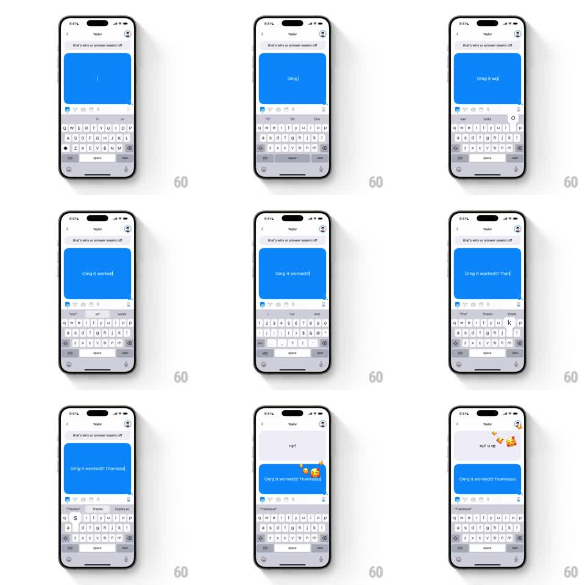

Media
Frame-by-frame

Rebuild this interaction 1:1: Honk's magic words - typing a trigger keyword ("Omg", "Thankssss") into the live bubble fires an emoji burst that erupts from the text and floats up over the chat.

Rebuild this interaction 1:1: Honk's magic words - typing a trigger keyword ("Omg", "Thankssss") into the live bubble fires an emoji burst that erupts from the text and floats up over the chat.
## Integration
Integration: stack-agnostic spec - springs given as stiffness/damping, timed motions as duration + curve; map every value to your framework and animation library of choice.
## Scene
Honk chat with Taylor ("that's why ur answer seems off" at top), keyboard open. The user types "Omg it worked!!! Thankssss" into the blue live bubble; as trigger words complete, emoji bursts (smiling faces with hearts, party faces, sparkles) pop out of the bubble. The exchange continues: "np! u re" with another small burst.
## Motion spec
Pattern: keyword-triggered emoji eruption.
- Typing proceeds character by character (~40ms) with the bubble's resize spring.
- The moment a magic word completes (word boundary after "Omg", "worked!!!", "Thankssss"): 5-8 matching emojis burst from the word's position in the bubble (scale 0 -> 1.2 -> 1, 60ms stagger), floating upward (translateY -100 to -200pt over 1-1.4s) with sway (+-15pt) and gentle spin (+-30deg), fading out at the end.
- Burst emoji set matches the word's sentiment: hearts/smiles for thanks, party/sparkles for excitement.
- The typed text stays fully intact - emojis are an overlay layer, never inserted into the message.
- Multiple triggers in one message stack bursts at their own positions.
## Calibration
- The burst origin tracks the word - as the bubble grows, later bursts fire further right/down.
- Keep bursts quick to spawn (same frame the word completes) - the responsiveness is the magic.
## Reduced motion
One emoji pops per trigger word and fades in place (300ms).
## Don't miss
- "Thankssss" with the extended s's is the trigger spelling - match real casual text.
- Bursts never interrupt typing cadence; the next characters keep landing during the animation.